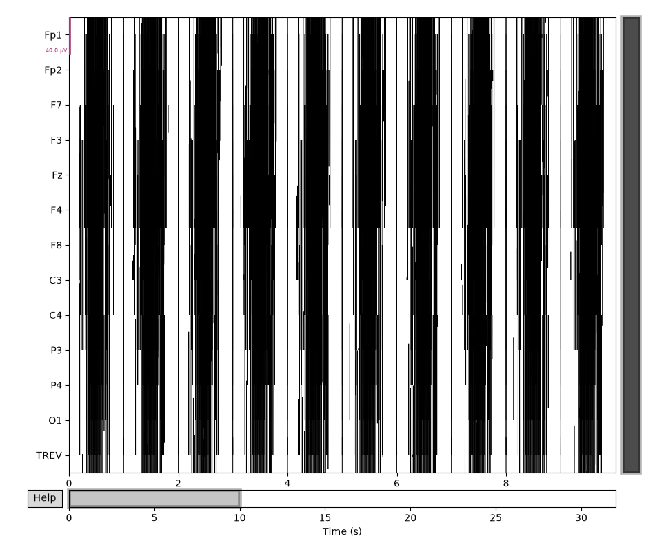
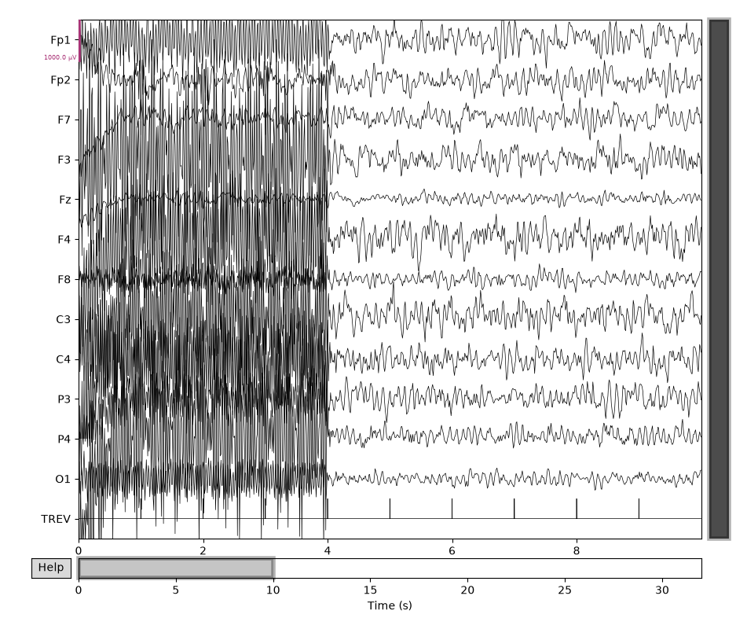

Note
Go to the end to download the full example code.
Removing the fMRI gradient artifact#
EEG recorded simultaneously with functional MRI (EEG-fMRI) is dominated by a large “gradient” (imaging) artifact caused by the scanner’s switching magnetic field gradients. The artifact is typically one to two orders of magnitude larger than the underlying neural signal, but because it repeats once per acquired volume (once per TR, i.e. repetition time), it can be estimated and subtracted using average artifact subtraction (AAS) [1].
This tutorial builds a small synthetic EEG-fMRI recording (so that it runs quickly and reproducibly, without requiring a real scanner recording or raising any data-privacy concerns), then shows the full workflow:
read the recording with
mne.io.read_raw_egi(),find the TR (volume) trigger events,
remove the gradient artifact with
mne.preprocessing.remove_fmri_gradient_artifact(),band-pass filter the cleaned data.
# Authors: The MNE-Python contributors.
# License: BSD-3-Clause
# Copyright the MNE-Python contributors.
import datetime
import tempfile
from pathlib import Path
import numpy as np
from mffpy.epoch import Epoch
from mffpy.writer import BinWriter, Writer
import mne
from mne.preprocessing import remove_fmri_gradient_artifact
# Use the matplotlib browser backend so the plots below render as static
# images reliably (the default Qt backend uses OpenGL-accelerated rendering,
# which can produce blank screenshots when captured for the documentation).
mne.viz.set_browser_backend("matplotlib")
Using matplotlib as 2D backend.
Simulate a synthetic EEG-fMRI recording#
Real EEG-fMRI recordings are not bundled with MNE-Python (they are large,
vendor-specific, and typically restricted for participant-privacy reasons),
so here we build a small, fully synthetic one instead. The result is a
genuine .mff (EGI) file that mne.io.read_raw_egi() reads exactly
like a real recording would.
We use 12 channels with real 10-20 electrode names and positions, a TR (“TREV”) trigger every second for 32 seconds (32 TRs), and overlay a repeating synthetic gradient-artifact waveform – 20 to 45 times larger than the background EEG noise, as in a real recording – on top of synthetic (not real) background EEG noise.
sfreq = 1000.0 # Hz
n_trs = 32
tr_samples = int(sfreq) # 1 TR = 1 second
n_samples = n_trs * tr_samples
ch_names = ["Fp1", "Fp2", "F7", "F3", "Fz", "F4", "F8", "C3", "C4", "P3", "P4", "O1"]
n_channels = len(ch_names)
start_time = datetime.datetime(2026, 1, 1, 12, 0, 0, tzinfo=datetime.UTC)
rng = np.random.default_rng(0)
def _make_colored_noise(n_samples, sfreq, std):
"""1/f-ish noise with a mild alpha (~10 Hz) bump, scaled to `std`."""
white = rng.standard_normal(n_samples)
freqs = np.fft.rfftfreq(n_samples, d=1 / sfreq)
spectrum = np.fft.rfft(white)
scale = 1.0 / np.sqrt(np.maximum(freqs, freqs[1])) # 1/f falloff
alpha = 1.0 + 2.0 * np.exp(-0.5 * ((freqs - 10.0) / 1.5) ** 2)
colored = np.fft.irfft(spectrum * scale * alpha, n=n_samples)
colored -= colored.mean()
colored *= std / colored.std()
return colored
def _make_gradient_template(tr_samples, sfreq, peak_amplitude):
"""Create a fixed, repeating gradient-artifact waveform for one TR."""
t = np.arange(tr_samples) / sfreq
ramp = 2 * (t / t[-1]) - 1 # slice-select-like ramp across the TR
slice_freqs = rng.uniform(20, 60, size=4)
slice_phases = rng.uniform(0, 2 * np.pi, size=4)
slice_weights = rng.uniform(0.3, 1.0, size=4)
slices = sum(
w * np.sin(2 * np.pi * f * t + p)
for w, f, p in zip(slice_weights, slice_freqs, slice_phases)
)
template = 0.6 * ramp + 0.4 * (slices / np.max(np.abs(slices)))
template *= peak_amplitude / np.max(np.abs(template))
return template
data = np.zeros((n_channels, n_samples), dtype=np.float32)
for ch in range(n_channels):
noise_std = rng.uniform(100.0, 380.0) # microvolts, realistic EEG range
noise = _make_colored_noise(n_samples, sfreq, noise_std)
peak_amp = noise_std * rng.uniform(20.0, 45.0)
template = _make_gradient_template(tr_samples, sfreq, peak_amp)
artifact = np.tile(template, n_trs)
data[ch] = noise + artifact
events_meta = [
{
"beginTime": start_time + datetime.timedelta(seconds=i),
"duration": 1_000_000,
"code": "TREV",
"label": f"TR {i + 1}",
"description": "",
}
for i in range(n_trs)
]
Real electrode positions for our 12 channels, borrowed from mffpy’s bundled 10-20 montage (only the positions are real; the data are not).
probe = Writer(str(Path(tempfile.mkdtemp()) / "_probe.mff"))
probe.add_coordinates_and_sensor_layout("Standard 10-20 (19 ch)")
coord_ns = "{http://www.egi.com/coordinates_mff}"
sl_ns = "{http://www.egi.com/sensorLayout_mff}"
coord_root = probe.files["coordinates.xml"][0].getroot()
wanted = {name.upper(): name for name in ch_names}
positions = {}
for sensor in coord_root.findall(
f"{coord_ns}sensorLayout/{coord_ns}sensors/{coord_ns}sensor"
):
name = sensor.find(f"{coord_ns}name").text
if name in wanted:
positions[wanted[name]] = tuple(
float(sensor.find(f"{coord_ns}{c}").text) for c in "xyz"
)
# mffpy requires the sensor count in sensorLayout.xml to match the number of
# data channels, and the "number" fields in sensorLayout.xml and
# coordinates.xml to agree with each other -- so we renumber both files
# consistently (1..12) using only our chosen channels.
import lxml.etree as ET # noqa: E402
sensor_layout_root = probe.files["sensorLayout.xml"][0].getroot()
coord_sensors_path = f"{coord_ns}sensorLayout/{coord_ns}sensors"
sensor_parents = [
(sl_ns, sensor_layout_root.find(f"{sl_ns}sensors")),
(coord_ns, coord_root.find(coord_sensors_path)),
]
for ns, sensors_el in sensor_parents:
for child in list(sensors_el):
sensors_el.remove(child)
for i, name in enumerate(ch_names, start=1):
sensor_el = ET.SubElement(sensors_el, f"{ns}sensor")
ET.SubElement(sensor_el, f"{ns}name").text = name
ET.SubElement(sensor_el, f"{ns}number").text = str(i)
ET.SubElement(sensor_el, f"{ns}type").text = "0"
for tag, val in zip("xyz", positions[name]):
ET.SubElement(sensor_el, f"{ns}{tag}").text = str(val)
Now write out the synthetic .mff file.
mff_path = Path(tempfile.mkdtemp()) / "synthetic_fmri_eeg_demo.mff"
writer = Writer(str(mff_path))
writer.addxml("fileInfo", recordTime=start_time)
writer.addxml("dataInfo", fileDataType="EEG")
writer.addxml(
"eventTrack",
name="TR_events",
trackType="STIM",
events=events_meta,
filename="Events_TREV.xml",
)
writer.addxml(
"epochs",
epochs=[
Epoch(
beginTime=0,
endTime=int(n_samples / sfreq * 1e6),
firstBlock=1,
lastBlock=1,
)
],
)
writer.files["sensorLayout.xml"] = probe.files["sensorLayout.xml"]
writer.files["coordinates.xml"] = probe.files["coordinates.xml"]
bin_writer = BinWriter(sampling_rate=int(sfreq), data_type="EEG")
bin_writer.add_block(data)
writer.addbin(bin_writer)
writer.write()
Read the recording#
From here on, this is exactly the workflow you would use on a real EEG-fMRI recording.
raw = mne.io.read_raw_egi(mff_path, preload=True)
Reading EGI MFF Header from /tmp/tmpt6yqyqqj/synthetic_fmri_eeg_demo.mff...
Reading events ...
Assembling measurement info ...
Excluding events {TREV} ...
/home/circleci/project/tutorials/preprocessing/58_fmri_gradient_artifact.py:203: RuntimeWarning: Fiducial point nasion not found, assuming identity unknown to head transformation
raw = mne.io.read_raw_egi(mff_path, preload=True)
Reading 0 ... 31999 = 0.000 ... 31.999 secs...
categories.xml not found or of wrong type. `Epoch.name` will default to "epoch" for all epochs.
Find the TR (volume) events#
Each TR trigger is a single-sample pulse on the “TREV” channel.
events = mne.find_events(raw, initial_event=True)
Finding events on: TREV
32 events found on stim channel TREV
Event IDs: [1]
Note
A trigger that is already high at the very first sample is normally
not counted by find_events(), since there is no preceding
“low” sample to rise from. Here our first TR trigger coincides with the
first sample, so we pass initial_event=True to keep it and recover
all 32 TRs.
Visualize the raw signal#
The gradient artifact dominates the recording – the underlying EEG signal is not visible at this scale.
raw.plot()

Remove the gradient artifact#
remove_fmri_gradient_artifact() implements average
artifact subtraction (AAS): for each TR, it builds a template by averaging
neighboring TRs (window=(4, 4) here averages the 4 TRs before and the 4
TRs after) and subtracts it.
raw_clean = remove_fmri_gradient_artifact(raw, events, window=(4, 4))
Filter the cleaned data#
With the (much larger) gradient artifact gone, a standard band-pass filter can be applied as usual.
filt = raw_clean.filter(l_freq=1.0, h_freq=30, n_jobs=2)
Filtering raw data in 1 contiguous segment
Setting up band-pass filter from 1 - 30 Hz
FIR filter parameters
---------------------
Designing a one-pass, zero-phase, non-causal bandpass filter:
- Windowed time-domain design (firwin) method
- Hamming window with 0.0194 passband ripple and 53 dB stopband attenuation
- Lower passband edge: 1.00
- Lower transition bandwidth: 1.00 Hz (-6 dB cutoff frequency: 0.50 Hz)
- Upper passband edge: 30.00 Hz
- Upper transition bandwidth: 7.50 Hz (-6 dB cutoff frequency: 33.75 Hz)
- Filter length: 3301 samples (3.301 s)
[Parallel(n_jobs=2)]: Using backend ThreadingBackend with 2 concurrent workers.
[Parallel(n_jobs=2)]: Done 12 out of 12 | elapsed: 0.0s finished
Visualize the result#
The recovered EEG signal is now visible at a realistic amplitude scale. The
default per-channel scaling is tuned for real (much smaller) EEG artifacts,
so we pass an explicit scalings value matched to our synthetic noise
amplitude for a readable plot.
Note
The first 4 TRs are not cleaned, since they were needed to build the
averaging template for artifact removal (window=(4, 4) looks 4 TRs
ahead and behind). You can see the gradient artifact’s continued
presence at the start of the plot below.
filt.plot(scalings=dict(eeg=500e-6))

See also#
For simultaneous EEG-fMRI recordings, the gradient artifact is often
removed first (as above), followed by removal of the cardiac
(ballistocardiographic) artifact with
mne.preprocessing.apply_pca_obs().
References#
Total running time of the script: (0 minutes 3.469 seconds)